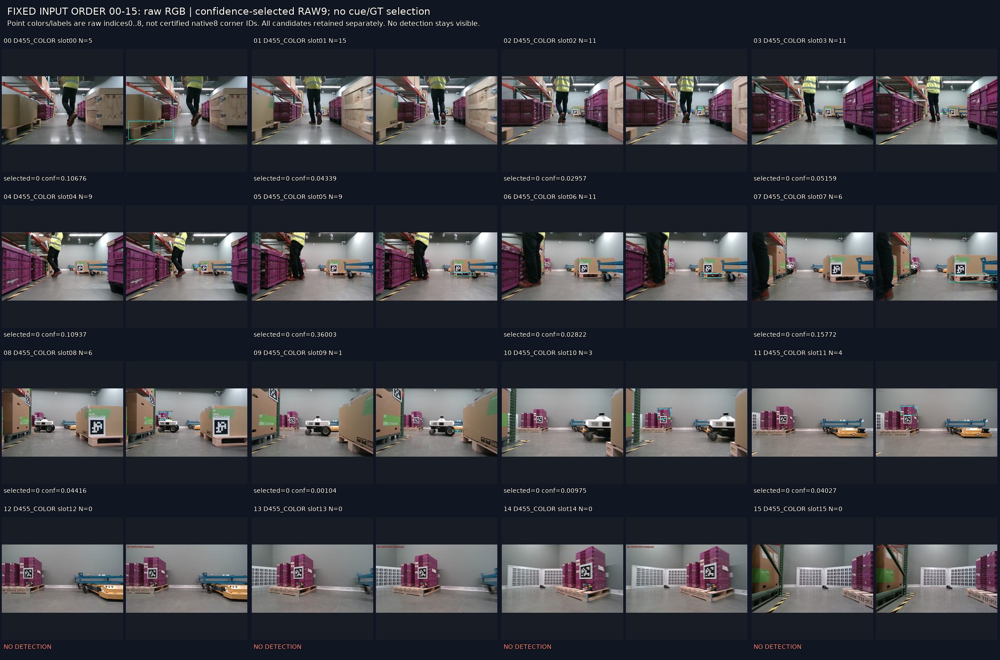
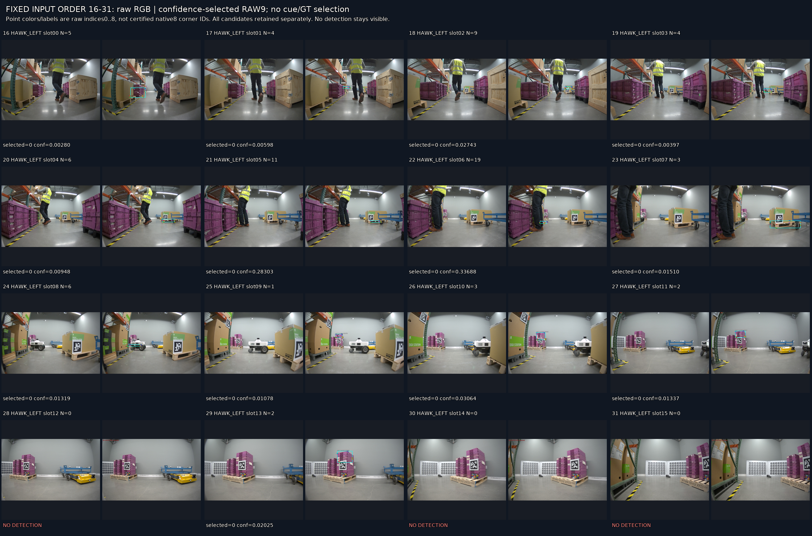
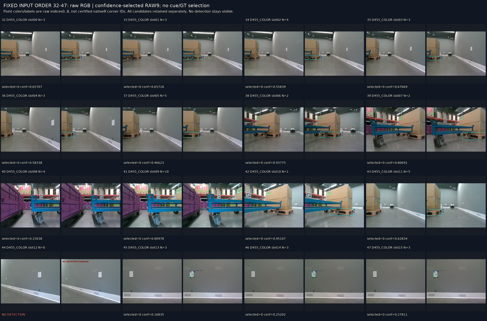
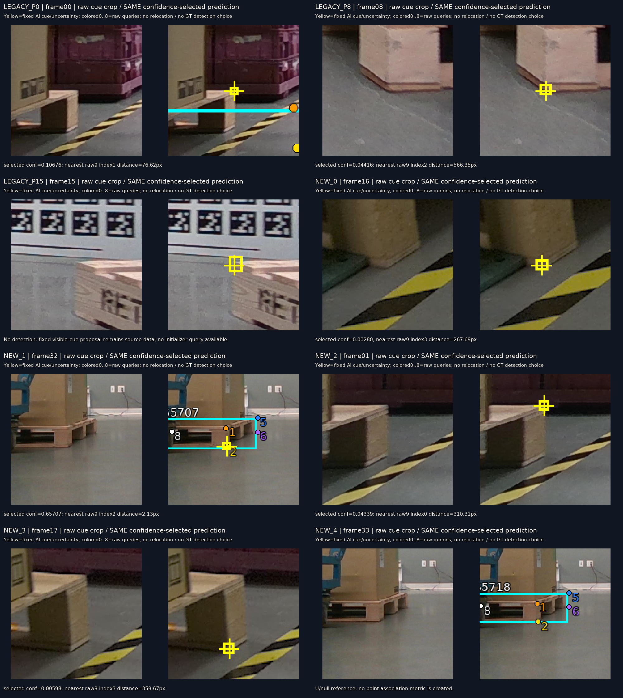

저장 출력 독립 검산 PASS. 48프레임 전체·반환 후보220개를 보존했고 미검출은8프레임이다. 새 가림 모델 개선이나 전체 가시성 목표 해결을 입증하는 결과는 아니다.
| stream | 프레임 | 미검출 | 전체후보 |
|---|---|---|---|
| r2b_storage_v3:D455_COLOR | 16 | 4 | 91 |
| r2b_storage_v3:HAWK_LEFT | 16 | 3 | 75 |
| r2b_galileo2_v1:D455_COLOR | 16 | 1 | 54 |
기존 조건부 AI cue7개 중 한 프레임은 미검출이다. 나머지6개에서 선택된 raw9점과 cue의 최소 거리는76.6/566.3/267.7/2.13/310.3/359.7px였다. Galileo slot0의 rawindex2만 고정 cue 불확실성 영역 안에 있었다. 이것은 기하적 근접 진단이며 native8 대응 정답이나 의미 가시성 성공률이 아니다. U/null1개는 그대로 유지했다.
실제 영상에서 Galileo slot13–15는 팔레트가 보이지 않는 회색 벽 콘센트에 검출이 붙었다(confidence0.168/0.252/0.278). Storage 후반에는 보이는 낮은 목재 베이스가 있어도 미검출이 나타났다. confidence만으로 대상 팔레트나 모서리 대응을 인증할 수 없다. 어떤 대체 후보도 cue에 가깝다는 이유로 선택하지 않았다.
P3는48×64×80×80 float16,39,321,600bytes이며 finite·padding0을 검산했다. 첫 프레임 반복과 상태 해시는 실행 영수증·동결 코드와 대조했으며 새 모델 재실행은 하지 않았다. 같은 미해결 촬영 계열로 묶고 독립 TRAIN/VAL로 부르지 않는다. human gold·E/S·학습 등록은 생성하지 않았다. 새 학습·현재223 접근·PnP0.




별도 ALL_CANDIDATES_RAW9_OVERLAYS에는 전체 반환후보를, SELECTED_RAW9_OVERLAYS에는 confidence 선택출력을 프레임별로 저장했다.